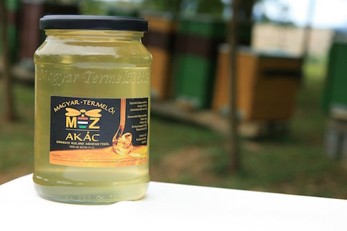
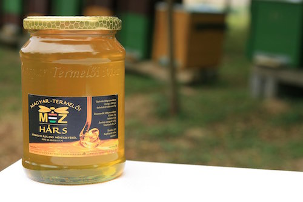
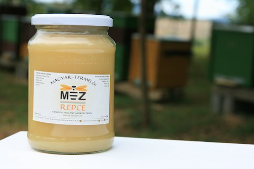
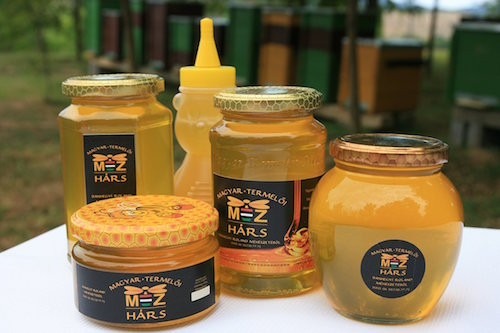
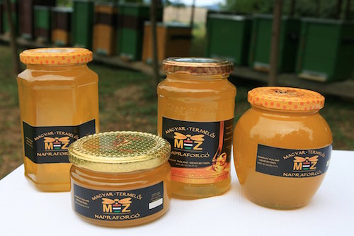

Termékek

Akác

Hárs

Repce

Gesztenye

Napraforgóméz

Propolisz
×

A 35 éves, technikus végzettségű tűzoltó 2 éve foglalkozik méhekkel, jelenleg 21 családja van. Nemcsak nagybátyja, de már dédnagyapja is méhészkedett. Kezdő méhészként több tapasztalatra vágyik. Tervei között szerepel, hogy a mecseknádasdi borászokkal jó munkakapcsolatot alakítson ki.
Legnagyobb sikerének azt tartja, ha jól betelelteti, és nem pusztulnak el a méhek. A Mecseki Mézes Körút 2014. szeptember 20-án, Borjádon megtartott mézminősítő versenyén a AKÁC méze ARANY minősítést kapott.
A bemutatóhelyet a település szélén álló présház szép udvarán alakítja ki. A hangulatos, nagy diófa árnyékot ad, ott le lehet ülni, kerti bútorok állnak rendelkezésre. A kert fölött van egy akácos, ott találhatók a méhek, ahonnan szép kilátás nyílik a településre.
Kicsit sem túlzó kijelentés, hogy méhek nélkül mi sem maradhatnánk sokáig a Föld bolygón. Ugyanis a táplálékul szolgáló növényeink nagy részének a beporzását ezek a kis szorgos rovarok végzik.
Igen sok terméket szolgáltatnak a számunkra, melyek nem csak finomak, de rendkívül egészségesek is. A méhek által előállított termékek közül a méz a legismertebb.
Ez az édes, ragacsos termék legnagyobb része cukor, kis része víz és a méhek által hozzáadott enzimek és egyéb anyagok. A méhek virágról virágra szállva összegyűjtik a növények által termelt nektárt. Ehhez hozzákeverik garatváladékukat, amely enzimeket és más hasznos anyagot tartalmaznak. Így készül a méz.
A méz kiváló természetes édesítőszer, amit akár a cukorbetegek is fogyaszthatnak. Ugyanakkor a fogyókúrázóknak sem kell lemondjanak az édességekről, hiszen a mézzel készült nyalánkságokkal bátran „bűnözhetnek”.
Akác
Hárs
Repce
Gesztenye
Napraforgóméz
Propolisz
A méz egészségünkre gyakorolt hatását már nem kell ecsetelni: a sejtek táplálásához szükséges minden anyagot tartalmaz, emellett természetes immunerősítő, baktériumölő, gyulladásgátló.
| Termék | Ár |
|---|---|
| Akác | 2000 ft/kg. |
| Hárs | 2200 ft/kg. |
| Repce | 1800 ft/kg. |
| Napraforgó | 1500 ft/kg. |
| Propolisz | 300 ft/dkg. |
Copyright © 2018 by Zsolt